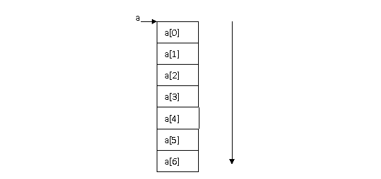
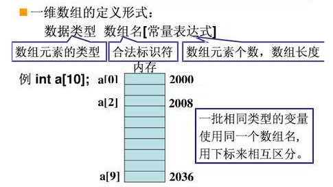

当我们要统计2学生的平均成绩的时候，我们可以这样：
int a; int b; scanf_s(“%d”,&a); scanf_s(“%d”,&b); printf(“%.2f”,(float)(a+b)/2);
也就是定义2个变量a和b，然后求和再除以2就可以了。但是，假如要求10个学生，100个学生甚至1000个学生的平均成绩怎么办呢？这种情况就不能这么求了，否则就要定义10个，100个甚至1000个变量，显然这是不方便的。而如果使用数组，就可以很容易的解决这个问题。这就是引入数组的好处。那么什么是数组呢?
所谓数组，就是一组相同类型的变量连续的存储在一段内存，并共用一个名字。每个变量使用下标来区别。这种相同类型的变量，被称作数组的元素，由定义看出，每个元素的类型相同，因此各个元素在内存中存放的长度也一样，即它们占用的空间是等长的，而数组名，就是这段内存的首地址。
比如下面的图，数组a，共有7个元素由低地址到高地址连续存储在内存中。每个元素大小一致（值可以不同），而数组名，即为该数组的首地址。
数组根据存放的数据的类型，可分为数值数组、字符数组、指针数组结构数组等各种类别，而按照数组的维度，又可以分为一维数组，二维数组，三维数组等。
一维数组可以理解为数学中的数列，所有的元素排成一列。首先来看数组的定义。一维数组的定义方式如下：
关于数组的长度一定得是一个整数常量而不能是变量或者其它类型的数。比如，下面关于数组的一些定义，有的是错误的：
int x = 10;
int a[x]; // c99以前的标准错误，x是变量而不是常量
// c99支持变量，但后面并不能动态变更长度，能C++的动态数组不一样
const int x = 10;
int a[x]; // 正确，x现在是常变量
int a[10]; // 正确，10是整数常量
一些常见的一维数组定义：
int a[100];
char a[100];
int *a[10];
a，首地址
&a[0]:首个元素的地址
a+1
&a[0]+1
因为数组是连续存储，所以它支持随机访问，即随便给出一个数组的下标i，就能够很快访问到对应的元素a[i]，访问速度快。
一些常见的一维数组初始化：
int a[10]={ 0,1,2,3,4,5,6,7,8,9 };
int a[10]={0,1,2,3,4}; // 10个元素，只显示初始化了前5个元素，后面的默认为0
int a[]={1,2,3,4,5}; // 未指定数组元素个数，实际上为5个元素
int a[6]={1}; // 6个元素，只显示初始化了第1个元素，后面的默认为0
数组如何存放结构体？
typedef struct _person
{
char name[20];
char sex;
int age;
}Person, *PPerson;
Person a[10];
strcpy(a[0].name, “tom”);
a[0].sex = ‘M’;
a[0].age = 25;
for(int i=0;i <sizeof(a)/sizeof(Person); i++)
{
}
对于一个长度为n的整型数组，应该如何去访问它的每一个元素呢？
for(int i = 0; i < n; i++)
{
printf(“a[%d]=%d\n”, i, a[i]);
}
数组的下标是从零开始计算的而不是从1开始计算的，这点对于初学者来说尤其要引起注意。比如，对于一个元素个数为N的数组a，那么它的所有成员为：
a[0],a[1],a[2],…,a[N-1]
所以，该数组的最后一个元素为a[N-1]而不是a[N]。如果试图去访问a[N]，那么访问就越界了。越界访问一个数组，其行为未定义。如果这个地方的内存不存在，那么可能会造成程序崩溃。而C语言的数组，是不会帮助你检测这个越界行为的。
在C语言程序中，数组有着广泛的应用。数组作为一种数据结构，一般就是用来存放程序运行中的各种待处理的数据。
数组用来计算斐波那契数列
斐波那契数列指的是这样一个数列：1, 1, 2, 3, 5, 8, 13, 21, 34, 55, 89, 144, ...
这个数列从第三项开始，每一项都等于前两项之和。
#include <stdio.h>
void main(void)
{
int a[20],i;
a[0]=1;a[1]=1;
for(i=2;i<20;i++)
{
a[i]=a[i-1]+a[i-2];
}
for(i=0;i<20;i++)
{
printf("%d ",a[i]);
}
}
数组统计平均成绩
int _tmain(int argc, _TCHAR* argv[])
{
int a[10];
int sum =0;
for(int i = 0; i<10;i++)
{
printf("Please input the score for %d:\n",i+1);
scanf_s("%d", &a[i]);// 这是数组元素的输入方法，a[i]是数组的第i个元素，
// 所以需要使用&求出它的地址。
}
for(int i = 0;i<10;i++)
{
sum+=a[i];
}
printf("The sum is:%d, and average score is :%f\n", sum,(float)sum/10);
return 0;
}
冒泡法排序：
冒泡法的排序思想是：从第n个元素(a[n-1])开始，扫描数组，比较相邻两个元素，如果次序相反则交换。如此反复，直到没有任何两个违反相反原则的元素。
void bubble_sort(int a[], size_t n);//a为数组名，n为数组元素个数
{
for(int i = 0;i<n-1;i++)
{
for(int j=n-1;j>i;j--)
{
if(a[j-1]>a[j])
{
int tmp = a[j-1];
a[j-1]=a[j];
a[j]=tmp;
}
}
}
}
5.5二维数组定义
二维数组可以理解为数学中的矩阵的一个类似概念。二维数组定义的一般形式为：
类型说明符 数组名[常量表达式1][常量表达式2]
在上面的定义中，常量表达式1为二维数组的行，常量表达式2为二维数组的列。一个具体的二维数组如下：
int a[5][10];
怎样理解多维数组名？一个n维int数组an，其数组名的值是其首元素的地址，是一个指针，一个常量。其类型是int(*anp)[i][j][…]。如三维int数组int a3[3][4][5]，则int(*a3p)[4][5] = a3;
a3的类型是int(*a3p)[4][5]
int (*ap)[10] = a;
上面就定义了一个5行10列的整型的二维数组，共有5*10个元素。C语言中定义的二维数组实际上是一个一维数组，这个一维数组的每一个成员又是一个一维数组。如以上定义的a数组，则可视a数组由a[0]、a[1]、a[2]、a[3]、a[4]五个元素组成，而a[0]、a[1]、a[2]…a[4]等每个元素又分别是由10个整型元素组成的一维数组。可用a[0][0]、a[0][1]等来引用a[0]中的每个元素，其它依次类推。
a[0][0] a[0][1] a[0][2] a[0][3]…a[0][9] a[1][0] a[1][1] a[1][2] a[1][3]…a[1][9] a[2][0] a[2][1] a[2][2] a[2][3]...a[2][9] ... a[4][0] a[4][1] a[4][2] a[4][3]...a[4][9]
二维数组在概念上是二维的，即是说其下标在行和列两个方向增减。但是，存放二维数组的内存却是连续编址的，也就是按一维线性排列的。在Ｃ语言中，二维数组是按行排列的。即，先存放a[0]行，再存放a[1]行，最后存放a[2]行。每行中的元素也是依次存放。而每个元素的长度取决于数组的类型。比如如果定义的是整数类型的数组，那么每个元素的长度即为sizeof(int)，一般为4个字节。比如a[5][10]的元素在内存中存放的情形为：
a[0][0] a[0][1] a[0][2] a[0][3]…a[0][9] a[1][0] a[1][1] a[1][2] a[1][3]…a[1][9] a[2][0]a[2][1]a[2][2] a[2][3]...a[2][9]...a[4][0] a[4][1] a[4][2] a[4][3]...a[4][9]
二维数组的初始化可以为下面的形式：
int a[5][3]={
{80,75,92},
{61,65,71},
{59,63,70},
{85,87,90},
{76,77,85} };
上面的方式就初始化了一个5行3列的数组。
对于二维数组的遍历，可以先列后行（即先遍历列，再遍历行），也可以先行后列（即先遍历行，再遍历列）进行。比如，对于一个m行n列的整型二维数组a[m][n]进行遍历：
// 先行后列：
for(int i = 0; i < m;i++)
{
for(int j = 0; j < n; j++)
{
printf(“%d/n”, a[i][j]);
}
}
//输出为：a[0][0] a[0][1] a[0][2] a[0][3]…a[0][9]...
可以使用指针的方式访问：
int(*pa)[3] = a;
int* p = (int*)a;
printf("%d\n", p[i*n+j]);
// 先列后行：
for(int i = 0; i < n;i++)
{
for(int j = 0; j < m; j++)
{
printf(“%d/n”, a[j][i]);
}
}
//输出为：a[0][0] a[1][0] a[2][0] a[3][0] a[4][0]
那么，这两种遍历方法，哪个更高效一些呢？
数组的元素由于是连续存放在内存中的，所以支持随机访问（即直接给出元素的下标，即可计算并取得其值）。如果数组比较小，能够在一个内存页中存放下，那么在对数组进行访问的过程中不会发生缺页中断等情况，因此先行后列和先列后行访问数组的效率差别不大。但是如果数组的数据比较大，一个内存页无法容纳下，由于数组是按行的顺序存放的，同一列的数据就有可能存放在不同的页中，那么先列后行的访问将引起更多的缺页中断，降低了遍历的效率。
如何计算数组的元素个数呢？
由于数组中每个元素的长度都一样，所以，可以用整个数组的长度除以第一个元素的长度，就是数组的个数了。
#define ARRAYSIZE(a) sizeof(a)/sizeof(a[0])
int a[5][10];
a和&a都是数组a[5][10]的首地址。那么它们有什么不同呢？实际上，它们代表的类型不同。
a是int a[10]对应的类型int (*A)[10]，
而&a则是a[5][10]对应的类型int (*A)[5][10]。
大家知道，指针运算中的“1”代表的是指针类型的长度。
所以a+1和&a+1中的1代表的长度分别为a的类型a[10]即sizeof (int) * 10
&a的类型a[5][10]即sizeof (int)*10*5。
所以，如果a 的首地址为1310392，那么a + 1和&a + 1的地址为：
a + 1 = 1310392 + sizeof (int) * 10 = 1310392 + 4 * 10 = 1310432 &a + 1 = 1310392 + sizeof (int) * 10 * 5 = 1310392 + 4 * 10 * 5 = 1310592
更抽象点的说，如果定义一个数组int a[M1][M2][…][Mn]，那么a + 1 = a首地址+M2*M3*…*Mn *sizeof (int)；而&a + 1 = a首地址 + M1*M2*…*Mn*sizeof (int)。
&a[0][0]:数组中第一个元素a[0][0]的地址。
下面的例子和代码可以证明这个关系：
#include <iostream>
using namespace std;
int main()
{
int a[2][3] = {10};
int *r = &a[0][0];
int (*p)[3]=a;
int (*q) [2][3]=&a;
printf ("a=\t%p\n&a=\t%p\n",a, &a);
printf ("r=\t%p\np=\t%p\nq=\t%p\n",r,p, q);
printf ("r+l=\t%p\np+l=\t%p\nq+l=\t%p\n",r+1,p+1,q+1);
cin.get();
return 0;
}
/*
a= 0012FF30
&a= 0012FF30
r= 0012FF30
p= 0012FF30
q= 0012FF30
r+l= 0012FF34
p+l= 0012FF3C
q+l= 0012FF48
*/
数组的长度计算，可以用sizeof(a)来计算。但是，一旦数组做了函数的参数，那么数组的长度就和指针的长度一样了。比如下面的代码：
void func(int a[], int len)//a是数组名，len是数组元素个数。数组做函数参数，一般都这么传递
{
printf(“sizeof(a) in func=%d\n”, sizeof(a));
}
int a[10] = {0};
printf(“sizeof(a)=%d\n”, sizeof(a));
func(a, 10);
执行上面的代码，你会发现输出的两个结果为：
sizeof(a)=40 sizeof(a) in func=4
也就是说，如果数组做了函数的参数，那么在函数内部，数组就变为了指针。实际上，数组是一个常量指针。比如：
int a[10];
a的类型为：int *const a;//a is a const pointer to int;
字符数组是指元素是字符类型的数组，字符数组的初始化可以为如下2个方式：
char str1[] = {‘h’,’e’,’l’,’l’,’o’,’ ‘,’w’,’o’,’r’,’l’,’d’};
char str2[]=“hello world”;
str1就是一个纯粹的字符数组，因为最后一个字符不是’\0’，str1不是一个字符串
str2既是字符数组，又是字符串
sizeof(str1)=? //11 sizeof(str2)=? //12 strlen(str1)=? //不确定，因为最后字符不是零，所以不是字符串 strlen(str2)=? //11，字符串的非零字符
在C语言中，数组的元素下标是从0开始计算的，所以，对于n个元素的数组a[n]， 遍历它的时候是a[0],a[1],...,a[n-1]，如果遍历到a[n]，数组就溢出了。
void print_array(int a[], int n)
{
for (int i = 0; i < n; i++)
{
a[i] = a[i+1]; // 当i = n-1时，就发生了数组越界
printf(“%d\n”, a[i]);
}
}
上面的循环判断应该改为：
for (int i = 0; i < n-1; i++)
void print_array(int (&a)[10])
{
for(int i=0;i<10;i++)
{
printf(“%d\n”,a[i]);
}
}
int main(void)
{
int a[9]={0};
printf_array(a); //无法通过，编译错误
}
数组名，其实就是数组的首地址，也是一个常量指针（参考第八章指针）。比如：
int a[10];
a的类型其实就是：int *const a，常量指针;
因此a的值（地址）不能再改变。但我们可以通过指针的方式来访问数组：
&a[i], a+i都是元素i的地址，而*(a+i)就是a[i];
当然，也可以定义一个int类型的指针，指向数组的首地址：
int* p2 = &a[0][0];
int *pa=a; // error
那么也可以通过
pa+i来求出第i个元素的地址，而通过pa[i]或者*(pa+i)来访问第i个元素。
思考与练习：
一个学习小组有5个人，每个人有三门课的考试成绩。求全组分科的平均成绩和各科总平均成绩。
提示，定义int score[3][5]二维数组来表示5个人3科的成绩。
本页共340段，8487个字符，14627 Byte(字节)